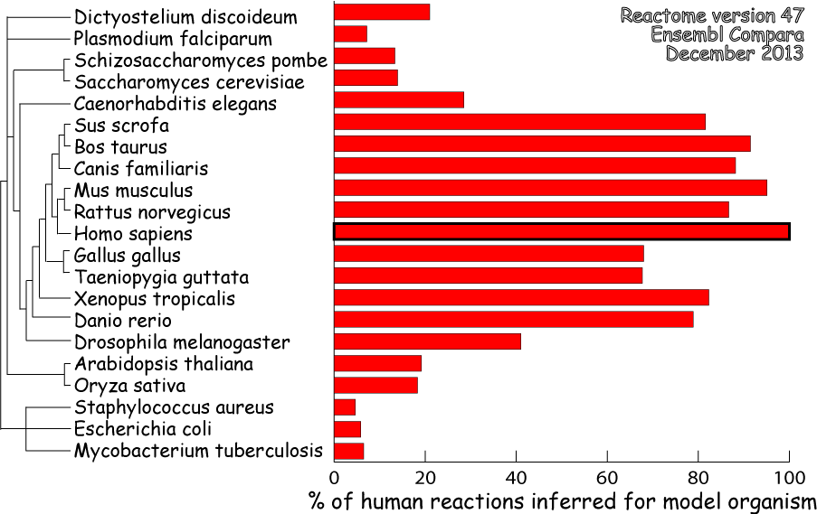

Electronically inferred events in ReactomeWe use the set of manually curated human reactions to electronically infer reactions in twenty evolutionarily divergent species for which high-quality whole-genome sequence data are available, and hence a comprehensive and high-quality set of protein predictions exists. These species include the laboratory mouse and rat, the nematode C. elegans, budding and fission yeasts, two plants and E.coli. The estimated success rates of our orthology inference strategy can be stated as 'the percentage of eligible reactions, defined in step 2 below, in the current human data set for which an event can be inferred in the model organism'. By this measure, success rates range from 95.6% for the laboratory mouse to 5.5% for the bacterium S. aureus. Electronic inference proceeds in four steps. 1) Protein homology data were obtained from Ensembl Compara. Briefly, this method is based on the construction of gene trees, using the longest protein translation for every Ensembl gene, for all species included in the Compara database. Homologues are deduced from these trees. The method is described in more detail in EnsemblCompara GeneTrees: Analysis of complete, duplication aware phylogenetic trees in vertebrates. Vilella et al., Genome Research, 2008. For the purpose of inferring homologous events in Reactome, we use the Core Compara database, containing vertebrate species, and the Pan Compara database, containing a wider spread of species, available from Ensembl Genomes. 2) All human reactions in the Reactome knowledgebase involving one or more proteins are eligible for electronic inference, with two exceptions. Reactions that were themselves inferred based on data from the model organism, and reactions involving species in addition to human (e.g., HIV infection of human cells) are excluded from electronic inference. Eligible reactions are checked to determine whether each involved protein has at least one homologous protein (HP) in the model organism. If a human reaction involves a complex, at least 75% of the accessioned protein components of the human complex must have HPs in the model organism. 3) For each reaction that meets these criteria, an equivalent reaction is created for the model organism by replacing each human protein with its model organism HP. If a human protein corresponds to more than one model organism HP, a DefinedSet called 'Homologues of ...' is created, with the model organism HPs as members. For human proteins that lack a model organism HP but that are included in complexes inferred due to the 75% threshold rule, placeholder model organism entities (called 'Ghost homologue of...') are created. 4) If this analysis generates reactions in the model organism corresponding to any of the steps of a human pathway, then the pathway event is also inferred for the model organism. These electronically inferred reactions are predictions based on a number of assumptions. Most basically, we assume that if we can find model organism HPs corresponding to all proteins involved in a human reaction, then the proteins mediate the same reaction in the model organism. This may not be true. On the other hand we may miss a truly homologous reaction in the model organism because it is mediated by structurally divergent proteins and the Compara strategy failed to identify them. Similarly, complexes sharing less than 75% homologous subunits between species may nevertheless continue to perform the same function. The electronically inferred reactions presented in Reactome are thus not data, but hypotheses useful to direct the design of confirmatory experiments.  |